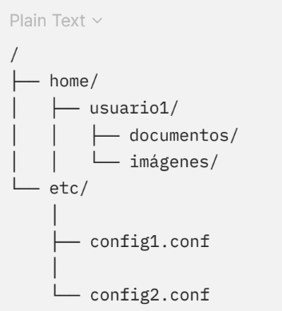
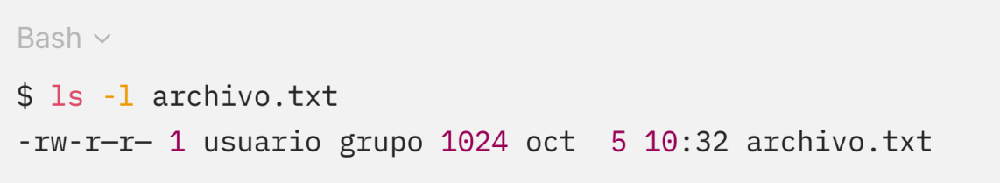
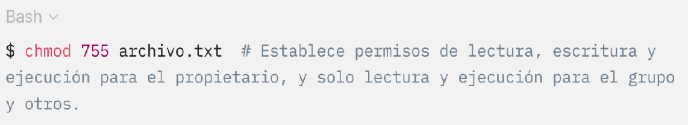

4.2.3 Archivos compartidos
La compartición de archivos es una característica esencial en sistemas multiusuario o en redes, donde diferentes usuarios y aplicaciones pueden necesitar acceder al mismo archivo simultáneamente. La implementación de archivos compartidos plantea varios desafíos, como la gestión de permisos, la sincronización de acceso y la coherencia de los datos. Existen varias formas de implementar archivos compartidos en un sistema de archivos:
Un enlace duro es una entrada en el sistema de archivos que apunta al mismo inodo (es decir, la misma ubicación en disco) que otro archivo. Ambos nombres de archivo son iguales para el sistema, por lo que cualquier cambio realizado en uno de los archivos se refleja automáticamente en el otro. Sin embargo, los enlaces duros solo pueden crearse en el mismo sistema de archivos.
En la siguiente Figura 2, se presenta un ejemplo ilustrativo de enlace duro en Linux usando el comando ln, ambos archivos comparten el mismo contenido
Figura 2. Uso de comando ln.

El archivo1.txt y enlace_duro.txt son dos nombres que apuntan al mismo contenido en el disco.
Los enlaces simbólicos son archivos que contienen una referencia (puntero) a otro archivo o directorio. A diferencia de los enlaces duros, los enlaces simbólicos pueden apuntar a archivos en diferentes sistemas de archivos o discos. Sin embargo, si el archivo original se elimina, el enlace simbólico se vuelve inválido (un enlace “roto”).
En la siguiente Figura 3 se presenta un ejemplo de uso del comando ln -s.
Figura 3. Creación de enlace simbólico en Linux.

Dado que enlace_simbolico.txt apunta a archivo1.txt. Si se elimina archivo1.txt, el enlace simbólico quedará roto.
Cuando varios usuarios o procesos acceden simultáneamente a un archivo compartido, el sistema de archivos debe implementar mecanismos para evitar conflictos y garantizar la coherencia de los datos. Los sistemas de archivos suelen utilizar bloqueos de archivos (file locks) para controlar el acceso concurrente. Un bloqueo puede ser de lectura o escritura, y asegura que cuando un proceso está accediendo al archivo, otros procesos no puedan modificarlo.
En Linux, se puede utilizar la función flock() para bloquear un archivo y garantizar que solo un proceso pueda escribir en él en un momento dado, a continuación, se presenta la Figura 4 como ejemplo.
Figura 4. Creación de enlace simbólico en Linux.

La implementación del sistema de archivos abarca la gestión eficiente de archivos, directorios y archivos compartidos. El sistema operativo debe equilibrar el uso del espacio en disco, el rendimiento y la coherencia de los datos para garantizar un acceso rápido y seguro a la información.
Los métodos como la asignación contigua, enlazada e indexada permiten gestionar eficientemente los archivos, mientras que los directorios jerárquicos facilitan la organización de los datos. La compartición de archivos se logra mediante enlaces duros, simbólicos y mecanismos de control de acceso concurrente, que permiten la colaboración entre usuarios y procesos.